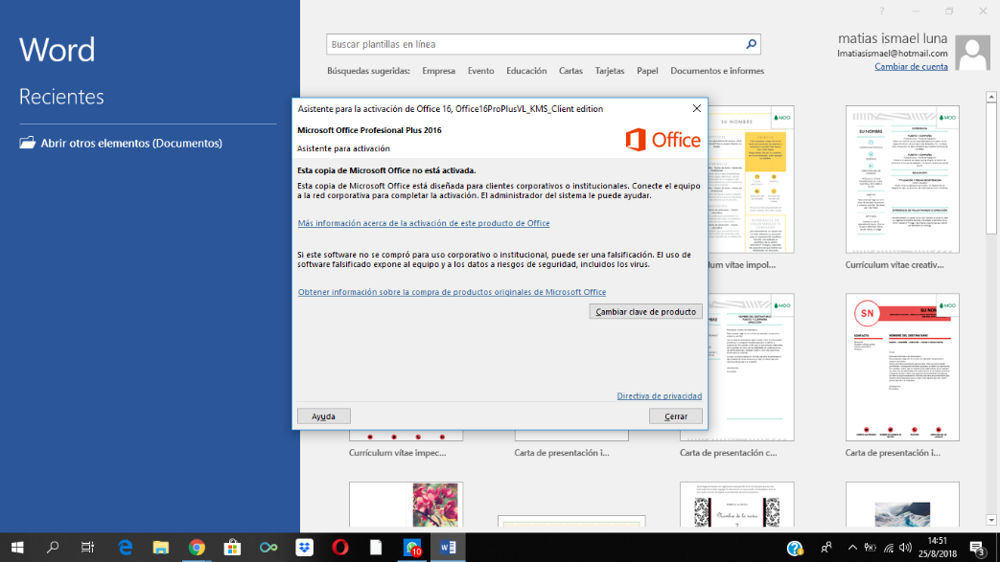
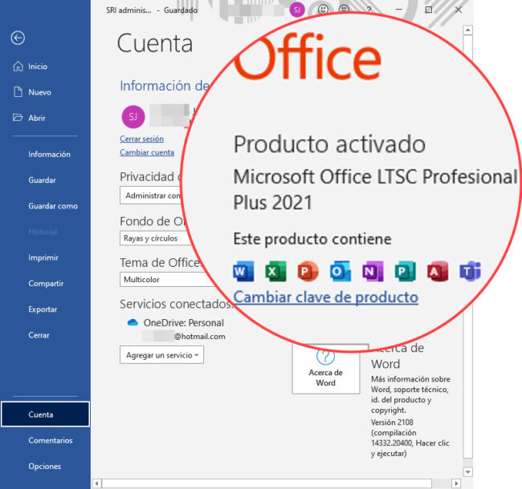

Solución 100% Garantizada
OFFICE 2021 / 2024 / 365
Soporte, Activación & Licenciamiento de Microsoft Office
🔑 ¿PROBLEMAS PARA TRABAJAR CON OFFICE?
¿Te sale el molesto cartel de "Licencia no válida", "Producto desactivado" o necesitas renovarla? ¡Olvídate de las interrupciones y bloqueos! Te ayudamos a dejar tu paquete de Microsoft Office activo, estable y 100% operativo para que trabajes o estudies sin problemas.
¿Te sale el molesto cartel de "Licencia no válida", "Producto desactivado" o necesitas renovarla? ¡Olvídate de las interrupciones y bloqueos! Te ayudamos a dejar tu paquete de Microsoft Office activo, estable y 100% operativo para que trabajes o estudies sin problemas.
¿Qué incluye nuestro servicio de soporte para Office y sistema?
-
Solución de avisos de activación: Eliminamos permanentemente los carteles molestos de "Producto desactivado" o "Uso no comercial".
-
Instalación de la suite completa: Microsoft Word, Excel, PowerPoint, Outlook, Publisher y Access completamente configurados.
-
Asesoría e instalación de licencias: Soluciones definitivas, estables y ajustadas a tus necesidades personales o empresariales.
-
Actualización de versión: Migración segura a versiones modernas y estables (Office 2019, 2021, 2024 y Microsoft 365).
-
Limpieza previa de errores: Eliminamos versiones anteriores corruptas o activadores inestables que ralentizan o bloquean el sistema.
Casos Reales en Taller

Antes
Activo